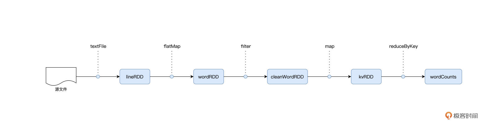
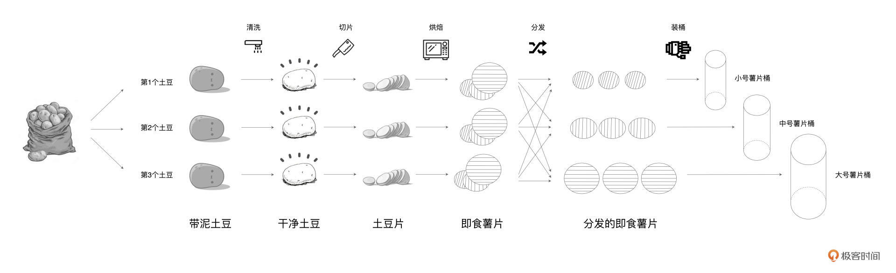
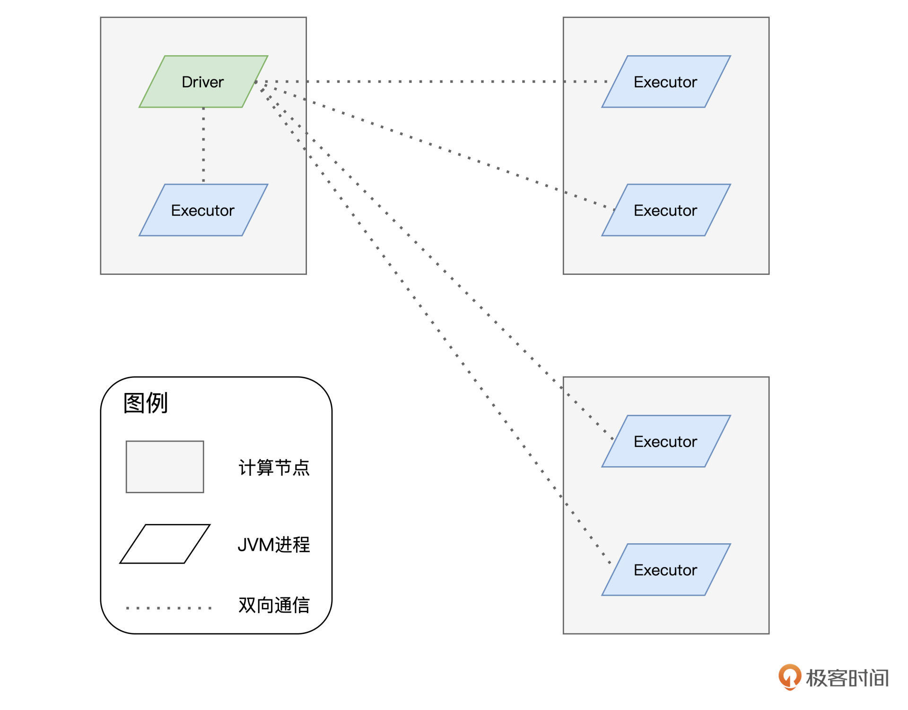
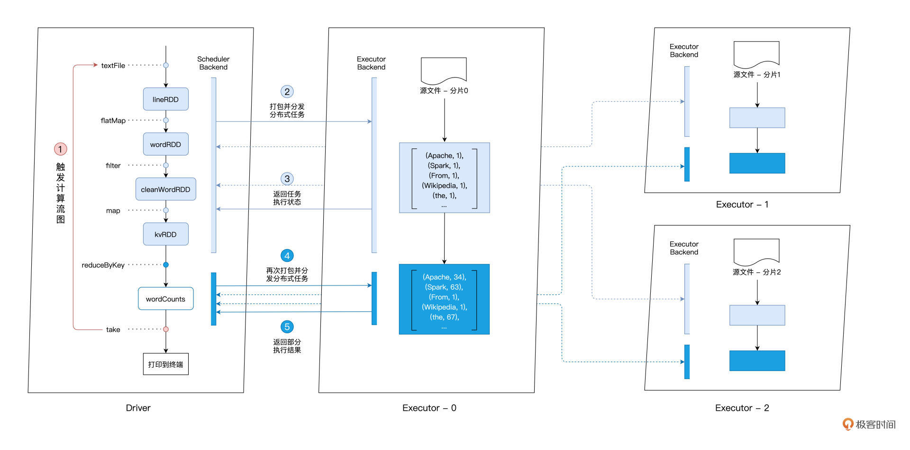
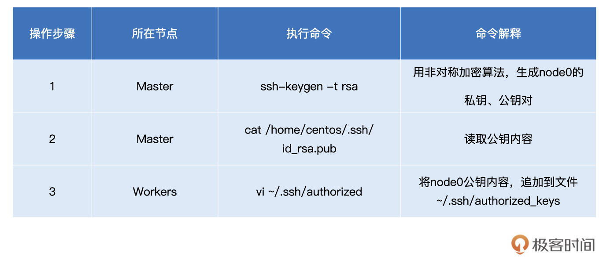
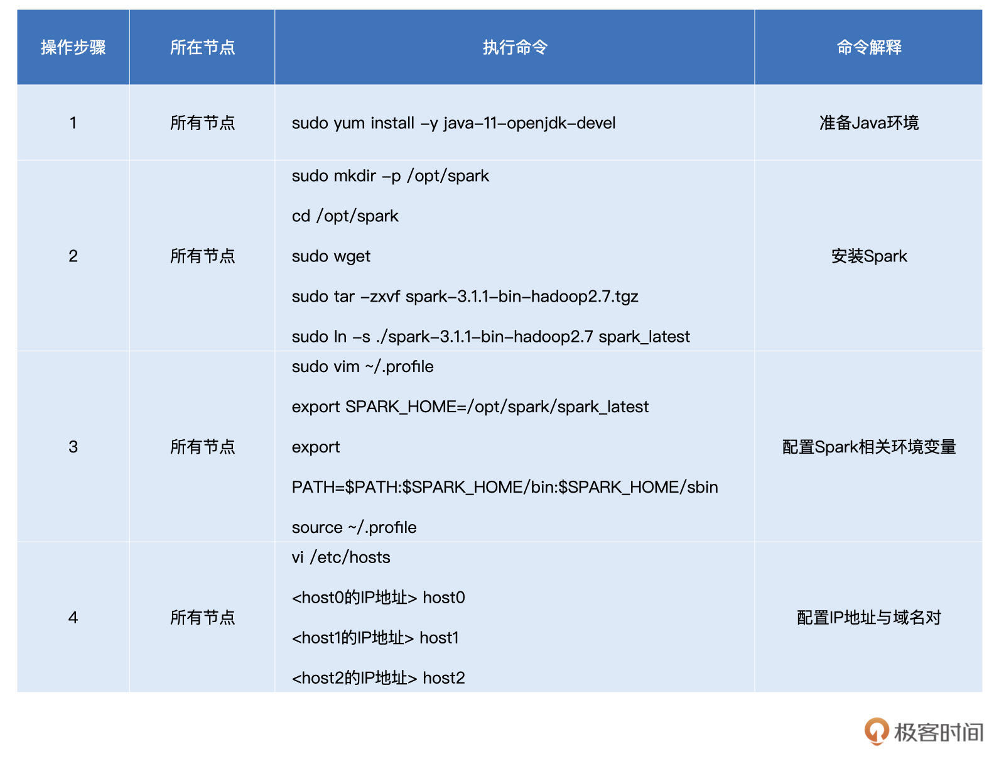
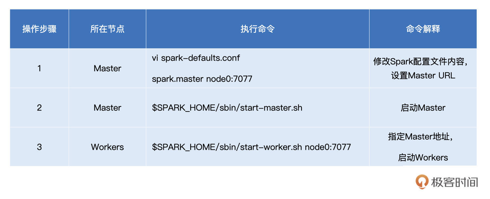

- 00 开篇词 入门Spark，你需要学会“三步走”.md
- 01 Spark：从“大数据的Hello World”开始.md
- 02 RDD与编程模型：延迟计算是怎么回事？.md
- 03 RDD常用算子（一）：RDD内部的数据转换.md
- 04 进程模型与分布式部署：分布式计算是怎么回事？.md
- 05 调度系统：如何把握分布式计算的精髓？.md
- 06 Shuffle管理：为什么Shuffle是性能瓶颈？.md
- 07 RDD常用算子（二）：Spark如何实现数据聚合？.md
- 08 内存管理：Spark如何使用内存？.md
- 09 RDD常用算子（三）：数据的准备、重分布与持久化.md
- 10 广播变量 & 累加器：共享变量是用来做什么的？.md
- 11 存储系统：数据到底都存哪儿了？.md
- 12 基础配置详解：哪些参数会影响应用程序稳定性？.md
- 13 Spark SQL：让我们从“小汽车摇号分析”开始.md
- 14 台前幕后：DataFrame与Spark SQL的由来.md
- 15 数据源与数据格式：DataFrame从何而来？.md
- 16 数据转换：如何在DataFrame之上做数据处理？.md
- 17 数据关联：不同的关联形式与实现机制该怎么选？.md
- 18 数据关联优化：都有哪些Join策略，开发者该如何取舍？.md
- 19 配置项详解：哪些参数会影响应用程序执行性能？.md
- 20 Hive + Spark强强联合：分布式数仓的不二之选.md
- 21 Spark UI（上）：如何高效地定位性能问题？.md
- 22 Spark UI（下）：如何高效地定位性能问题？.md
- 23 Spark MLlib：从“房价预测”开始.md
- 24 特征工程（上）：有哪些常用的特征处理函数？.md
- 25 特征工程（下）：有哪些常用的特征处理函数？.md
- 26 模型训练（上）：决策树系列算法详解.md
- 27 模型训练（中）：回归、分类和聚类算法详解.md
- 28 模型训练（下）：协同过滤与频繁项集算法详解.md
- 29 Spark MLlib Pipeline：高效开发机器学习应用.md
- 30 Structured Streaming：从“流动的Word Count”开始.md
- 31 新一代流处理框架：Batch mode和Continuous mode哪家强？.md
- 32 Window操作&Watermark：流处理引擎提供了哪些优秀机制？.md
- 33 流计算中的数据关联：流与流、流与批.md
- 34 Spark + Kafka：流计算中的“万金油”.md
- 用户故事 小王：保持空杯心态，不做井底之蛙.md
- 结束语 进入时间裂缝，持续学习.md
04 进程模型与分布式部署：分布式计算是怎么回事？
你好，我是吴磊。
在[第2讲]的最后，我们留了一道思考题。Word Count的计算流图与土豆工坊的流水线工艺，二者之间有哪些区别和联系？如果你有点记不清了，可以看下后面的图回忆一下。


我们先来说区别。首先，Word Count计算流图是一种抽象的流程图，而土豆工坊的流水线是可操作、可运行而又具体的执行步骤。然后，计算流图中的每一个元素，如lineRDD、wordRDD，都是“虚”的数据集抽象，而流水线上各个环节不同形态的食材，比如一颗颗脏兮兮的土豆，都是“实实在在”的实物。
厘清了二者之间的区别之后，它们之间的联系自然也就显而易见了。如果把计算流图看作是“设计图纸”，那么流水线工艺其实就是“施工过程”。前者是设计层面、高屋建瓴的指导意见，而后者是执行层面、按部就班的实施过程。前者是后者的基石，而后者是前者的具化。
你可能会好奇：“我们为什么非要弄清这二者之间的区别和联系呢？”原因其实很简单，分布式计算的精髓，在于如何把抽象的计算流图，转化为实实在在的分布式计算任务，然后以并行计算的方式交付执行。
今天这一讲，我们就来聊一聊，Spark是如何实现分布式计算的。分布式计算的实现，离不开两个关键要素，一个是进程模型，另一个是分布式的环境部署。接下来，我们先去探讨Spark的进程模型，然后再来介绍Spark都有哪些分布式部署方式。
进程模型
在Spark的应用开发中，任何一个应用程序的入口，都是带有SparkSession的main函数。SparkSession包罗万象，它在提供Spark运行时上下文的同时（如调度系统、存储系统、内存管理、RPC通信），也可以为开发者提供创建、转换、计算分布式数据集（如RDD）的开发API。
不过，在Spark分布式计算环境中，有且仅有一个JVM进程运行这样的main函数，这个特殊的JVM进程，在Spark中有个专门的术语，叫作“Driver”。
Driver最核心的作用在于，解析用户代码、构建计算流图，然后将计算流图转化为分布式任务，并把任务分发给集群中的执行进程交付运行。换句话说，Driver的角色是拆解任务、派活儿，而真正干活儿的“苦力”，是执行进程。在Spark的分布式环境中，这样的执行进程可以有一个或是多个，它们也有专门的术语，叫作“Executor”。
我把Driver和Executor的关系画成了一张图，你可以看看：

分布式计算的核心是任务调度，而分布式任务的调度与执行，仰仗的是Driver与Executors之间的通力合作。在后续的课程中，我们会深入讲解Driver如何与众多Executors协作完成任务调度，不过在此之前，咱们先要厘清Driver与Executors的关系，从而为后续的课程打下坚实的基础。
Driver与Executors：包工头与施工工人
简单来看，Driver与Executors的关系，就像是工地上包工头与施工工人们之间的关系。包工头负责“揽活儿”，拿到设计图纸之后负责拆解任务，把二维平面图，细化成夯土、打地基、砌墙、浇筑钢筋混凝土等任务，然后再把任务派发给手下的工人。工人们认领到任务之后，相对独立地去完成各自的任务，仅在必要的时候进行沟通与协调。
其实不同的建筑任务之间，往往是存在依赖关系的，比如，砌墙一定是在地基打成之后才能施工，同理，浇筑钢筋混凝土也一定要等到砖墙砌成之后才能进行。因此，Driver这个“包工头”的重要职责之一，就是合理有序地拆解并安排建筑任务。
再者，为了保证施工进度，Driver除了分发任务之外，还需要定期与每个Executor进行沟通，及时获取他们的工作进展，从而协调整体的执行进度。
一个篱笆三个桩，一个好汉三个帮。要履行上述一系列的职责，Driver自然需要一些给力的帮手才行。在Spark的Driver进程中，DAGScheduler、TaskScheduler和SchedulerBackend这三个对象通力合作，依次完成分布式任务调度的3个核心步骤，也就是：
- 根据用户代码构建计算流图；-
- 根据计算流图拆解出分布式任务；-
- 将分布式任务分发到Executors中去。
接收到任务之后，Executors调用内部线程池，结合事先分配好的数据分片，并发地执行任务代码。对于一个完整的RDD，每个Executors负责处理这个RDD的一个数据分片子集。这就好比是，对于工地上所有的砖头，甲、乙、丙三个工人分别认领其中的三分之一，然后拿来分别构筑东、西、北三面高墙。
好啦，到目前为止，关于Driver和Executors的概念，他们各自的职责以及相互之间的关系，我们有了最基本的了解。尽管对于一些关键对象，如上述DAGScheduler、TaskScheduler，我们还有待深入，但这并不影响咱们居高临下地去理解Spark进程模型。
不过，你可能会说：“一说到模型就总觉得抽象，能不能结合示例来具体说明呢？”接下来，我们还是沿用前两讲展示的Word Count示例，一起去探究spark-shell在幕后是如何运行的。
spark-shell执行过程解析
在第1讲，我们在本机搭建了Spark本地运行环境，并通过在终端敲入spark-shell进入交互式REPL。与很多其他系统命令一样，spark-shell有很多命令行参数，其中最为重要的有两类：一类是用于指定部署模式的master，另一类则用于指定集群的计算资源容量。
不带任何参数的spark-shell命令，实际上等同于下方这个命令：
spark-shell --master local[*]
这行代码的含义有两层。第一层含义是部署模式，其中local关键字表示部署模式为Local，也就是本地部署；第二层含义是部署规模，也就是方括号里面的数字，它表示的是在本地部署中需要启动多少个Executors，星号则意味着这个数量与机器中可用CPU的个数相一致。
也就是说，假设你的笔记本电脑有4个CPU，那么当你在命令行敲入spark-shell的时候，Spark会在后台启动1个Driver进程和3个Executors进程。
那么问题来了，当我们把Word Count的示例代码依次敲入到spark-shell中，Driver进程和3个Executors进程之间是如何通力合作来执行分布式任务的呢？
为了帮你理解这个过程，我特意画了一张图，你可以先看一下整体的执行过程：

首先，Driver通过take这个Action算子，来触发执行先前构建好的计算流图。沿着计算流图的执行方向，也就是图中从上到下的方向，Driver以Shuffle为边界创建、分发分布式任务。
Shuffle的本意是扑克牌中的“洗牌”，在大数据领域的引申义，表示的是集群范围内跨进程、跨节点的数据交换。我们在专栏后续的内容中会对Shuffle做专门的讲解，这里我们不妨先用Word Count的例子，来简单地对Shuffle进行理解。
在reduceByKey算子之前，同一个单词，比如“spark”，可能散落在不用的Executors进程，比如图中的Executor-0、Executor-1和Executor-2。换句话说，这些Executors处理的数据分片中，都包含单词“spark”。
那么，要完成对“spark”的计数，我们需要把所有“spark”分发到同一个Executor进程，才能完成计算。而这个把原本散落在不同Executors的单词，分发到同一个Executor的过程，就是Shuffle。
大概理解了Shuffle后，我们回过头接着说Driver是怎么创建分布式任务的。对于reduceByKey之前的所有操作，也就是textFile、flatMap、filter、map等，Driver会把它们“捏合”成一份任务，然后一次性地把这份任务打包、分发给每一个Executors。
三个Executors接收到任务之后，先是对任务进行解析，把任务拆解成textFile、flatMap、filter、map这4个步骤，然后分别对自己负责的数据分片进行处理。
为了方便说明，我们不妨假设并行度为3，也就是原始数据文件wikiOfSpark.txt被切割成了3份，这样每个Executors刚好处理其中的一份。数据处理完毕之后，分片内容就从原来的RDD[String]转换成了包含键值对的RDD[(String, Int)]，其中每个单词的计数都置位1。此时Executors会及时地向Driver汇报自己的工作进展，从而方便Driver来统一协调大家下一步的工作。
这个时候，要继续进行后面的聚合计算，也就是计数操作，就必须进行刚刚说的Shuffle操作。在不同Executors完成单词的数据交换之后，Driver继续创建并分发下一个阶段的任务，也就是按照单词做分组计数。
数据交换之后，所有相同的单词都分发到了相同的Executors上去，这个时候，各个Executors拿到reduceByKey的任务，只需要各自独立地去完成统计计数即可。完成计数之后，Executors会把最终的计算结果统一返回给Driver。
这样一来，spark-shell便完成了Word Count用户代码的计算过程。经过了刚才的分析，对于Spark进程模型、Driver与Executors之间的关联与联系，想必你就有了更清晰的理解和把握。
不过，到目前为止，对于Word Count示例和spark-shell的讲解，我们一直是在本地部署的环境中做展示。我们知道，Spark真正的威力，其实在于分布式集群中的并行计算。只有充分利用集群中每个节点的计算资源，才能充分发挥出Spark的性能优势。因此，我们很有必要去学习并了解Spark的分布式部署。
分布式环境部署
Spark支持多种分布式部署模式，如Standalone、YARN、Mesos、Kubernetes。其中Standalone是Spark内置的资源调度器，而YARN、Mesos、Kubernetes是独立的第三方资源调度与服务编排框架。
由于后三者提供独立而又完备的资源调度能力，对于这些框架来说，Spark仅仅是其支持的众多计算引擎中的一种。Spark在这些独立框架上的分布式部署步骤较少，流程比较简单，我们开发者只需下载并解压Spark安装包，然后适当调整Spark配置文件、以及修改环境变量就行了。
因此，对于YARN、Mesos、Kubernetes这三种部署模式，我们不做详细展开，我把它给你留作课后作业进行探索。今天这一讲，我们仅专注于Spark在Standalone模式下的分布式部署。
为了示意Standalone模式的部署过程，我这边在AWS环境中创建并启动了3台EC2计算节点，操作系统为Linux/CentOS。
需要指出的是，Spark分布式计算环境的部署，对于节点类型与操作系统本身是没有要求和限制的，但是在实际的部署中，请你尽量保持每台计算节点的操作系统是一致的，从而避免不必要的麻烦。
接下来，我就带你手把手地去完成Standalone模式的分布式部署。
Standalone在资源调度层面，采用了一主多从的主从架构，把计算节点的角色分为Master和Worker。其中，Master有且只有一个，而Worker可以有一到多个。所有Worker节点周期性地向Master汇报本节点可用资源状态，Master负责汇总、变更、管理集群中的可用资源，并对Spark应用程序中Driver的资源请求作出响应。
为了方便描述，我们把3台EC2的hostname分别设置为node0、node1、node2，并把node0选做Master节点，而把node1、node2选做Worker节点。
首先，为了实现3台机器之间的无缝通信，我们先来在3台节点之间配置无密码的SSH环境：

接下来，我们在所有节点上准备Java环境并安装Spark（其中步骤2的“sudo wget”你可以参考这里的链接），操作命令如下表所示：

在所有节点之上完成Spark的安装之后，我们就可以依次启动Master和Worker节点了，如下表所示：

集群启动之后，我们可以使用Spark自带的小例子，来验证Standalone分布式部署是否成功。首先，打开Master或是Worker的命令行终端，然后敲入下面这个命令：
MASTER=spark://node0:7077 $SPARK_HOME/bin/run-example org.apache.spark.examples.SparkPi
如果程序能够成功计算Pi值，也就是3.14，如下图所示，那么说明咱们的Spark分布式计算集群已然就绪。你可以对照文稿里的截图，验证下你的环境是否也成功了。
重点回顾
今天这一讲，我们提到，**分布式计算的精髓在于，如何把抽象的计算流图，转化为实实在在的分布式计算任务，然后以并行计算的方式交付执行。**而要想透彻理解分布式计算，你就需要掌握Spark进程模型。
进程模型的核心是Driver和Executors，我们需要重点理解它们之间的协作关系。任何一个Spark应用程序的入口，都是带有SparkSession的main函数，而在Spark的分布式计算环境中，运行这样main函数的JVM进程有且仅有一个，它被称为 “Driver”。
Driver最核心的作用，在于解析用户代码、构建计算流图，然后将计算流图转化为分布式任务，并把任务分发给集群中的Executors交付执行。接收到任务之后，Executors调用内部线程池，结合事先分配好的数据分片，并发地执行任务代码。
对于一个完整的RDD，每个Executors负责处理这个RDD的一个数据分片子集。每当任务执行完毕，Executors都会及时地与Driver进行通信、汇报任务状态。Driver在获取到Executors的执行进度之后，结合计算流图的任务拆解，依次有序地将下一阶段的任务再次分发给Executors付诸执行，直至整个计算流图执行完毕。
之后，我们介绍了Spark支持的分布式部署模式，主要有Standalone、YARN、Mesos、Kubernetes。其中，Standalone是Spark内置的资源调度器，而YARN、Mesos、Kubernetes是独立的第三方资源调度与服务编排框架。在这些部署模式中，你需要重点掌握Standalone环境部署的操作步骤。
每课一练
好，在这一讲的最后，我给你留两道作业，帮助你巩固今日所学。
-
与take算子类似，collect算子用于收集计算结果，结合Spark进程模型，你能说一说，相比collect算子相比take算子来说都有哪些隐患吗？
-
如果你的生产环境中使用了YARN、Mesos或是Kubernetes，你不妨说一说，要完成Spark在这些独立框架下的分布式部署，都需要哪些必备的步骤？
今天这一讲就到这里了，如果你在部署过程中遇到的什么问题，欢迎你在评论区提问。如果你觉得这一讲帮助到了你，也欢迎你分享给更多的朋友和同事，我们下一讲再见。
© 2019 - 2023 Liangliang Lee. Powered by Vert.x and hexo-theme-book.